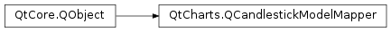

QtCharts.QCandlestickModelMapper¶
Inherited by: QtCharts.QVCandlestickModelMapper, QtCharts.QHCandlestickModelMapper
Note
This class was introduced in Qt 5.7.
Synopsis¶
Functions¶
- def
close() - def
firstSetSection() - def
high() - def
lastSetSection() - def
low() - def
model() - def
open() - def
series() - def
setClose(close) - def
setFirstSetSection(firstSetSection) - def
setHigh(high) - def
setLastSetSection(lastSetSection) - def
setLow(low) - def
setModel(model) - def
setOpen(open) - def
setSeries(series) - def
setTimestamp(timestamp) - def
timestamp()
Virtual functions¶
- def
orientation()
Signals¶
- def
modelReplaced() - def
seriesReplaced()
Detailed Description¶
-
class
PySide2.QtCharts.QtCharts.QCandlestickModelMapper([parent=nullptr])¶ Parameters: parent – PySide2.QtCore.QObject
-
PySide2.QtCharts.QtCharts.QCandlestickModelMapper.close()¶ Return type: PySide2.QtCore.int
-
PySide2.QtCharts.QtCharts.QCandlestickModelMapper.firstSetSection()¶ Return type: PySide2.QtCore.int
-
PySide2.QtCharts.QtCharts.QCandlestickModelMapper.high()¶ Return type: PySide2.QtCore.int
-
PySide2.QtCharts.QtCharts.QCandlestickModelMapper.lastSetSection()¶ Return type: PySide2.QtCore.int
-
PySide2.QtCharts.QtCharts.QCandlestickModelMapper.low()¶ Return type: PySide2.QtCore.int
-
PySide2.QtCharts.QtCharts.QCandlestickModelMapper.model()¶ Return type: PySide2.QtCore.QAbstractItemModel
-
PySide2.QtCharts.QtCharts.QCandlestickModelMapper.modelReplaced()¶
-
PySide2.QtCharts.QtCharts.QCandlestickModelMapper.open()¶ Return type: PySide2.QtCore.int
-
PySide2.QtCharts.QtCharts.QCandlestickModelMapper.orientation()¶ Return type: PySide2.QtCore.Qt.Orientation
-
PySide2.QtCharts.QtCharts.QCandlestickModelMapper.series()¶ Return type: PySide2.QtCharts.QtCharts::QCandlestickSeries
-
PySide2.QtCharts.QtCharts.QCandlestickModelMapper.seriesReplaced()¶
-
PySide2.QtCharts.QtCharts.QCandlestickModelMapper.setClose(close)¶ Parameters: close – PySide2.QtCore.int
-
PySide2.QtCharts.QtCharts.QCandlestickModelMapper.setFirstSetSection(firstSetSection)¶ Parameters: firstSetSection – PySide2.QtCore.int
-
PySide2.QtCharts.QtCharts.QCandlestickModelMapper.setHigh(high)¶ Parameters: high – PySide2.QtCore.int
-
PySide2.QtCharts.QtCharts.QCandlestickModelMapper.setLastSetSection(lastSetSection)¶ Parameters: lastSetSection – PySide2.QtCore.int
-
PySide2.QtCharts.QtCharts.QCandlestickModelMapper.setLow(low)¶ Parameters: low – PySide2.QtCore.int
-
PySide2.QtCharts.QtCharts.QCandlestickModelMapper.setModel(model)¶ Parameters: model – PySide2.QtCore.QAbstractItemModel
-
PySide2.QtCharts.QtCharts.QCandlestickModelMapper.setOpen(open)¶ Parameters: open – PySide2.QtCore.int
-
PySide2.QtCharts.QtCharts.QCandlestickModelMapper.setSeries(series)¶ Parameters: series – PySide2.QtCharts.QtCharts::QCandlestickSeries
-
PySide2.QtCharts.QtCharts.QCandlestickModelMapper.setTimestamp(timestamp)¶ Parameters: timestamp – PySide2.QtCore.int
-
PySide2.QtCharts.QtCharts.QCandlestickModelMapper.timestamp()¶ Return type: PySide2.QtCore.int
© 2018 The Qt Company Ltd. Documentation contributions included herein are the copyrights of their respective owners. The documentation provided herein is licensed under the terms of the GNU Free Documentation License version 1.3 as published by the Free Software Foundation. Qt and respective logos are trademarks of The Qt Company Ltd. in Finland and/or other countries worldwide. All other trademarks are property of their respective owners.